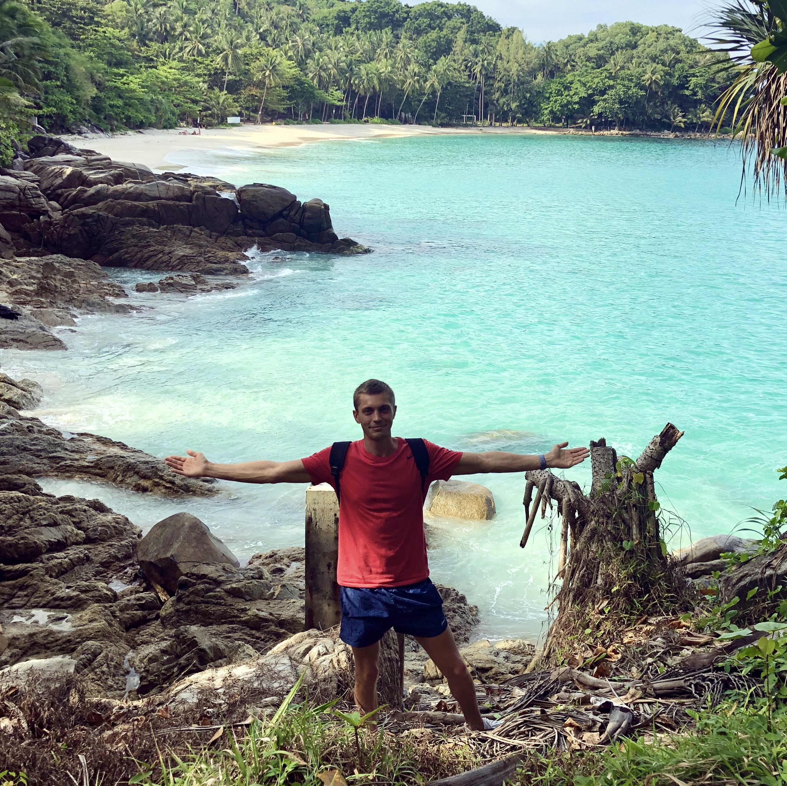
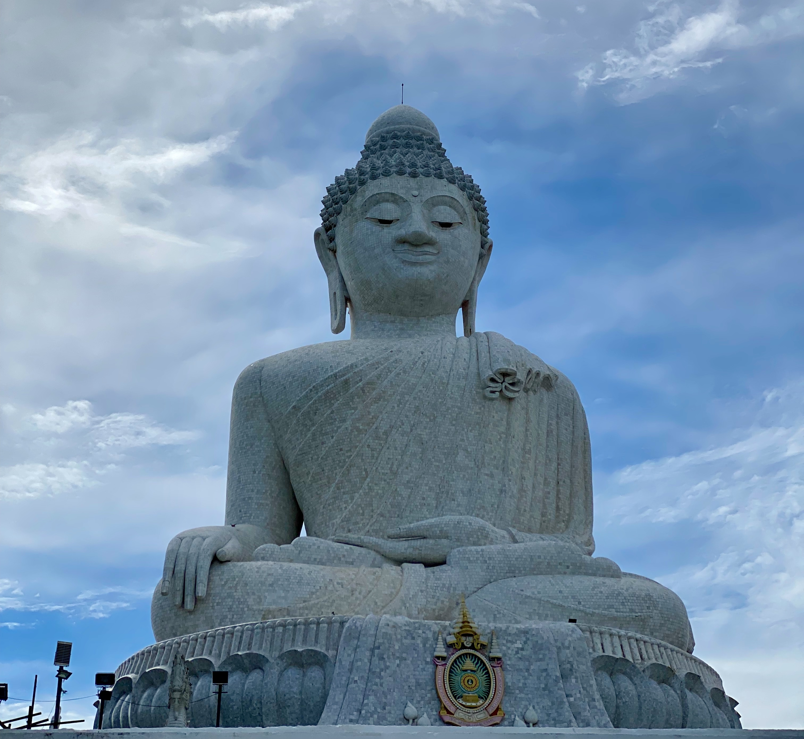

Phuket Island
Phuket is the largest island in Thailand, located in the south of the country, in the Andaman Sea of the Indian Ocean. Occupying an area of 540 sq. km, it has a length of 50 km from north to south and 21 km from west to east. It is connected to the mainland by three bridges. The capital of Thailand, Bangkok, is 863 km away.
Phuket beaches: an overview of the best options for tourists with different requests
Paradise beaches with velvety white sand are the main attraction of Phuket in Thailand. There are many beaches here, and you will not find two similar ones. Some delight with silence and a peaceful atmosphere, while others never end the party. There are long white sandy beaches and tiny bays hidden between coastal cliffs. Some are known to every tourist, while others are known only to locals. In a word, the beauty of Phuket is that everyone here can find a beach to their liking. All about the beaches of Phuket - in our review.
What to be guided by when choosing a beach in Phuket
Most Phuket hotels are located along the beaches of the west coast, with the beaches in the southern part of the island (Patong, Kalim, Nai Harn, Yanui, Karon, Kata) the most popular. As a result, the infrastructure is developed here, there are a lot of shops and restaurants, but there are also a lot of tourists. The beaches in the northern part of the island (Surin, Kamala, Bang Tao, Nai Thon, Mai Khao and Nai Yang) are less in demand, there are few benefits of civilization and entertainment, but there are also people: for example, on the long beach of Nai Yang you can meet only a dozen human.However, in order to have fun in a club or go shopping, you will have to cross half of the island. That is why, if you decide to stay in the north of the island, you will have to pay extra for the transfer when buying excursions.
There are practically no beaches suitable for recreation on the east coast of the island - they are all occupied by fishing marinas, so it makes no sense for lovers of relaxing by the sea to stop here. Phuket Town, the administrative center of the island, will not be the best choice either: it is quite far to get to any beach from here, and the town itself, despite its peculiar charm, cannot offer tourists a wide range of entertainment.
So, the beaches of Phuket - which one to choose? All of them are amazing, unique, beautiful, and the choice depends on your preferences. What would you like from your vacation? Noise, parties, discos, crowds? Or solitude, isolation, silence and unity with nature? To help you with your choice, here are a few beach ratings in Phuket.
Rating of Phuket beaches:
Almost every site dedicated to the Kingdom of Thailand has its own rating of Phuket beaches. And these rankings are very similar. We took as a basis an overview of the beaches of Phuket, compiled by the authors of the SpiritRelax travel portal. According to the compilers, the leadership in different categories belongs to the following beaches:
The cleanest:
- Bang Tao, Kalim, Kata, Kamala, Nai Thon, Yanui - 1st place.
- Patong, Karon, Nai Harn, Surin - 2nd place.
- Nai Yang - 3rd place.
The most crowded :
- Patong, Karon - 1st place.
- Kata, Bang Tao, Surin - 2nd place.
- Kalim, Kamara, Nai Harn - 3rd place.
- Nai Tong, Nai Yang - 4th place.
- Yanui - 5th place.
The most expensive:
- Patong, Karon, Bang Tao, Surin - the highest prices.
- Kalim, Kata, Nai Ton, Nai Yang, Yanui - the average price segment.
- Kamala, Nai Harn — low prices.
Leading beaches for entertainment:
- Patong, Karon, Bang Tao - 1st place.
- Kata, Surin - 2nd place.
- Kalim, Kamala, Nai Harn - 3rd place.
- Nai Tong, Nai Yang - 4th place.
- Yanui - 5th place.
Leading beaches by the number of shops:
- Patong, Karon, Bang Tao - 1st place.
- Kata, Kamala, Surin - 2nd place.
- Kalim, Nai Harn - 3rd place.
- Nai Tong, Nai Yang - 4th place.
- Yanui - 5th place.
Thus, the beaches of Patong, Karon, Kata, Kalim, Kamala, Nai Harn, Bang Tao and Surin can be considered the best of the best in terms of a combination of features. We will talk about them in more detail.
Review of the best beaches in Phuket:
Patong.The most famous, fun and crowded beach of the island. Most of the clubs, restaurants and bars for every taste are concentrated here, and one of the best shopping centers of the island, Jungceylon, is also located here. The choice of hotels in Patong is huge: from the most expensive hotels to incredibly cheap guest houses and hostels. In a word, this is a very convenient place to relax, but it has a minus: there are always a lot of people on the beach, and the Thai services responsible for order and cleanliness do not always have time to remove the garbage that irresponsible tourists scatter. Nevertheless, the beach itself is very beautiful, the entrance to the sea is sandy and relatively smooth.
Kalim is the northernmost part of Patong. Geographically, Kalim and Patong are the same beach. But the atmosphere here is completely different - it is much quieter and calmer, there are fewer tourists, there are no noisy bars and discos. Kalim and the entire northern region of Patong is a good choice for those who want both parties and a quiet beach holiday at the same time. If you stay at Kalima, then you can drive to all the benefits of civilization that Patong offers in 3 minutes.
Karon.This beach is considered a family one. Of course, there are clubs and bars here too, but Karon is much quieter than Patong. At the same time, there is everything you need for a comfortable stay - restaurants with Thai and European cuisine, spas, shops, markets with fruits and souvenirs, a variety of entertainment. Karon is an exceptionally beautiful long beach with white coral sand that creaks pleasantly underfoot like snow. And this beach is the most popular among Russians.
Kata.The one and a half kilometer Kata beach is located next to Karon, if you wish, you can walk to it on foot. This is a picturesque clean beach with the smoothest entry into the sea. In terms of atmosphere and level of infrastructure, it is very similar to Karon, so families with children, honeymooners looking for romance, and everyone who does not like the crowd, noise and round-the-clock party prefer to stay here. The southern part is more pleasant, because in the northern part of Kata a river overgrown with silt flows into the sea.
Phuket Attractions
For many years, Phuket has been breaking records in terms of popularity and demand among travelers. And not without reason, because the resorts of the island are located on excellent beaches, sea water pleases with cleanliness and transparency, and vacation prices have always been kept at an affordable level.
According to many tourists, Phuket is a strong and worthy compromise between the ambiguous Pattaya and places like Koh Samui, Krabi or Phi Phi. The island has heavenly views, tranquil lagoons, traditional temples and hundreds of entertainment venues.
In the capital of the island, Phuket Town, you can wander the streets and enjoy the amazing architecture, and then rent a bike and drive to one of the many viewing platforms or to any beach. Everything is nearby, so the traveler does not have to travel hundreds of kilometers of tiresome road.
Top 3 attractions in phuket
Big Buddha
The monument is 45 meters high, installed on the Nakkerd hill in the southern part of the city. The Buddha statue is part of a large temple complex, which is being built with charitable funds. The construction of the monastery began in 2002 and continues to this day. Anyone can donate money for the construction. The majestic statue of the god is visible from many points in Phuket, several roads lead to the sights from the coast.
Temple Wat Chalong
The temple is located in the center of the island on the way to the Big Buddha statue. The attraction is included in all Phuket sightseeing tours. Wat Chalong is the largest and most picturesque temple on the island. It is well-deservedly popular among tourists. In the interior, gilding prevails in the decoration of elements, the floor is laid out of marble. The walls are painted with frescoes depicting scenes from the life of the Buddha.
Suwan Khiri Ket Temple
The building was built at the very end of the 19th century in the Karon beach area. The small building of the temple looks quite well-groomed, as it is carefully monitored. At the entrance there are figures of guard kites of emerald color. Twice a week, a night market operates on the site near the temple, where you can buy food and clothes. Some tourists claim that you can enter the territory of the monastery in a bathing suit, given its location on the beach.
Comments
Waiting the post about Malaysia
Thanks for the interesting content! Can you please tell me how much it costs to rent a bike for a week?


Amazing post! Thank you